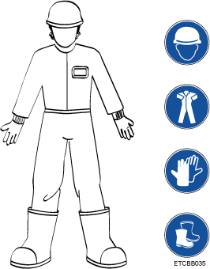

Basic Precautions
- Trained personnel must be certified, understand all required safety regulations, and master correct operational methods before installing, operating and maintaining Huawei equipment.
- All work with equipment must comply with local laws and regulations. Safety information in the manual only serves as a supplement. In addition:
- Only skilled and instructed person can install, operate, and maintain equipment.
- Only skilled and instructed person can remove safety infrastructure and maintenance equipment.
- Ordinary person must report faults or errors that may cause safety issues promptly.
- All personnel working with equipment should have high-voltage operation, climbing, special equipment operation, and other operational qualifications required by the local country.
- If personal injury or equipment damage occurs during installation, stop operations immediately, report the situation to the project owner, and take effective protective measures.
- All work on outdoor equipment is strictly forbidden in lightning, rain, snow, wind and other adverse weather conditions. Such work includes but is not limited to outdoor equipment transportation, cabinet installation, power cable installation, and outdoor cable connection.
- Do not wear watches, jewelry, or other conductive objects when working with equipment.
- Dedicated insulation safety tools such as gloves, clothing, helmet, and shoes must be worn at all times, as shown in Figure 1.
Figure 1 Safety personal protective equipment (PPE)
- Always follow the procedures in the Hardware Installation and Maintenance Guide, Configuration Guide, and Operation and Maintenance Guide while working.
- Use a voltmeter to measure the voltage at the contact point before touching any metal surface or terminal to prevent electric shocks.
- Ensure that all slots are filled with boards or filler panels. Avoid exposure to board hazardous voltage and heat by ensuring that ventilation channels are working normally, that electromagnetic interference is controlled, and that the backplane, motherboard, and boards are free from dust or foreign matter.
- After equipment installation, conduct routine checks and maintenance. Promptly replace faulty parts as required by the Hardware Installation and Maintenance Guide and Operation and Maintenance Guide.
- After equipment installation, clear the area of packaging materials such as the box, styrofoam, plastic, and cable ties.
- In case of fire, evacuate from the building or equipment area and activate the fire alarm or call the fire emergency number. Do not reenter the burning building under any circumstances.